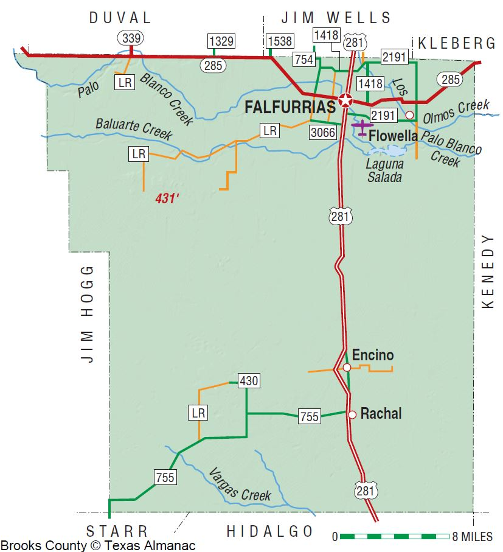

I recognize an item from the Yo Tengo Nombre/I Have a Name sites. How can I verify the identity of the person?
If you recognize information about an unidentified deceased person from this page, please contact the Colibrí Center for Human Rights, at http://www.colibricenter.org/or call 520-724-8644. We are a family advocacy organization working to end migrant death and related suffering on the U.S.-Mexico border.
How do I bring home the body of my loved one?
After you have contacted Reuniting Families to verify the identity of the body, please go to the Repatriation section below to learn about the process of repatriation.
How do I report a missing migrant?
If you are missing a loved one, you may report them to:
Who is identifying the found bodies?
Identifying the remains of migrants is a joint effort between government agencies and volunteer forensic anthropologists.Those involved include the Brooks County Sheriff’s Office, the Webb County Medical Examiner’s Office, Texas State University, the University of North Texas, Baylor University, the University of Indianapolis, the South Texas Human Rights Center, and others.
What happens to the unidentified bodies?
Unidentified remains are sent to Texas State University to be examined, photographed, and added to the Yo Tengo Nombre/I Have a Name database. A DNA sample is sent to the University of North Texas to be cross-checked.
I did not find the person I’m searching for. What should I do now?
Unfortunately, the resources going toward the search and identification of missing persons are limited. We suggest taking a closer look in the found items gallery and checking back regularly for updates on the Yo Tengo Nombre/I Have a Name site or the NamUS database.
Where do I submit a sample of the missing person’s DNA?
If you have a DNA sample that you would like to submit to the national DNA Index System, contact:
I would like to volunteer/donate.
To volunteer for the South Texas Human Rights Center, contact Eddie Canales at ecsouthtexashumanrights@gmail.com
Repatriation is the legal process of returning remains to their home country. It is a long and complex process, but consulates general and advocate organizations in the United States can assist you.
Repatriation begins when a remains are found and reported to local authorities. In the case of Brooks County, the Sheriff’s Office is the agency in charge.
A funeral home transports the remains to a medical examiner’s office for autopsy. If the remains are accompanied by identifying documents (identification card, passport, birth certificate), the consulate for the country of origin is contacted.
If the remains are unidentified, a DNA sample is compared against the national DNA index (Combined DNA Index System). If a match is found, the consulate for the country of origin is contacted. If no match is found, the remains are transferred to Texas State University for storage, and a DNA sample is shared with the University of North Texas.
If only skeletal remains are found, they are transferred to Texas State University for an analysis to document unique features and belongings. A DNA sample is sent to the University of North Texas.
After an identification is made, the local funeral home changes the death certificate name from “Unknown” to the correct name. The consulate for the country of origin will be contacted to take possession of and repatriate the remains.
